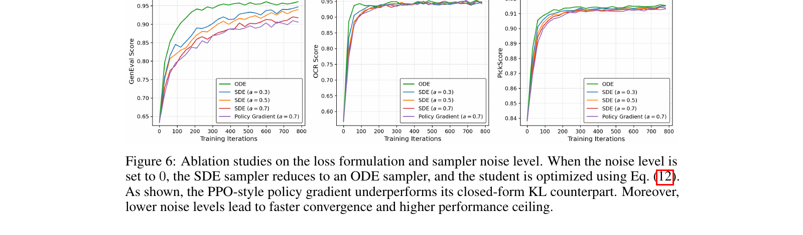
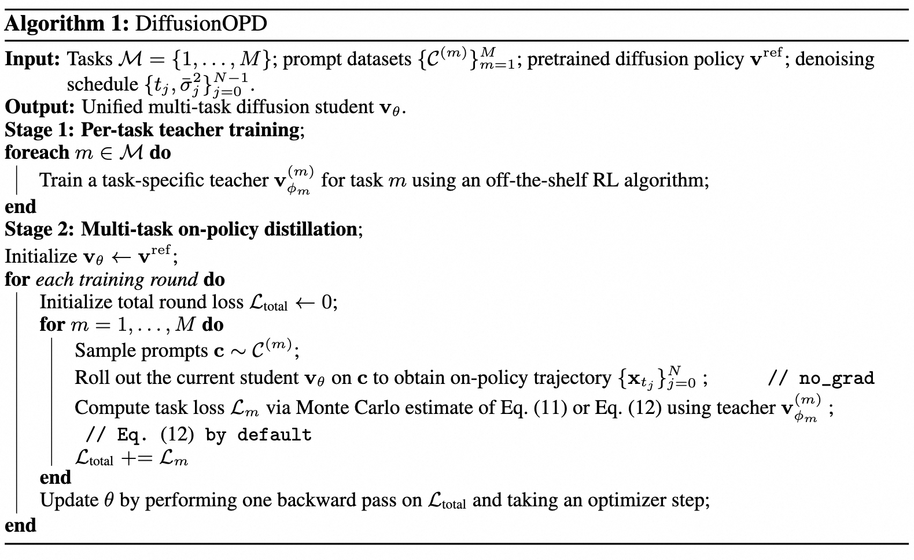
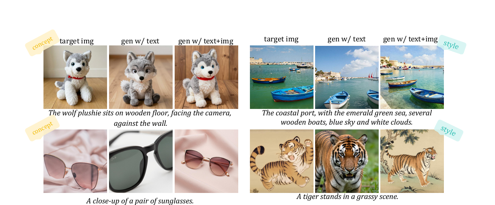

OPD 在 Diffusion / Flow Matching 上的应用:三兄弟 + 分布匹配蒸馏 + 统一视角
On-Policy Distillation(OPD,同策略蒸馏) 是 LLM 后训练里把"student 自己采样、teacher 逐步纠正"做成范式的一套方法(GKD, Agarwal et al. 2023)。2026 年 5 月,几乎同一周冒出了把它搬进文生图扩散/flow matching 的"三兄弟"——Flow-OPD、DiffusionOPD、D-OPSD——三者共享同一个漂亮的数学折叠,却在"要不要 RL、要不要 reward、teacher 是谁"上给出不同答案。
本教程用 7 个螺旋结构章节(直觉 → 最小 demo → 正式化 → 真实代码 → 洞察)把这条线讲透:§1–§2 立地基(on-policy 为什么治 exposure bias;SDE 同协方差 → reverse-KL = 速度场 L2);§3–§5 是三兄弟;§6 讲近亲 DMD/SiD 分布匹配蒸馏(为提速而非对齐);§7 把 RL-for-diffusion、知识蒸馏、分布匹配三条线收敛成一个统一模板 + 四个选择轴。所有 Step-4 代码 verbatim 引自四个真实训练脚本(Flow-OPD / DiffusionOPD / D-OPSD / DMD2),并经 diff 逐行验证。
阅读提示:§2 是全篇支柱(KL→L2 折叠),后面每节都站在它上面;§7 是把五个方法压成一句话的综合。带着"teacher 在 student 轨迹上给一个 per-state 目标"这把尺子读,各方法的异同会一目了然。
1. 为什么需要 OPD:从 LLM 的 GKD 到扩散的两道死结
1.1 直觉
学写作文有两种方式。第一种是"照抄范文":老师把一篇满分作文摊在你面前,你照着抄、记住它每个句子。问题是,真到考场上自己写,你写出的句子和范文长得不一样,一旦开头跑偏,后面越写越离谱——而范文里根本没有"如何从你这个错误的开头补救"的示范。这种"训练时只见过范文、自己写时却到了没人教过的地方"的毛病,就叫 exposure bias(曝光偏差)。
第二种是"自己写、老师逐句改":你先按自己的水平写一句,老师立刻在你这句话的基础上告诉你下一句该怎么接。监督打在你自己真会写出的句子上,正好治住第一种的病。
把"老师"换成一个强模型(teacher)、"学生"换成待训练的模型(student),这第二种就是本教程的主角:OPD = On-Policy Distillation(同策略蒸馏)——student 用自己采样出的样本,teacher 在同一个状态上给出学习目标。图 1 把这两种监督画在了一起。
1.2 最小 demo
下面用一个一维玩具说明:offline 监督打在 teacher 分布上,但 student 自己真正会走到的区域,offline 根本没覆盖。
import numpy as np
rng = np.random.default_rng(0)
# teacher 分布集中在 0 附近;student 当前还很偏,集中在 3 附近
teacher_samples = rng.normal(0.0, 1.0, size=2000) # offline 监督打在这里
student_samples = rng.normal(3.0, 1.0, size=2000) # student 自己真正会到的状态
def covered(region, samples): # 落在某区间的样本占比
lo, hi = region
return np.mean((samples >= lo) & (samples < hi))
student_region = (2.0, 4.0) # student 高频访问区
print("offline 在该区监督密度:", covered(student_region, teacher_samples)) # ~0.02
print("on-policy 在该区监督密度:", covered(student_region, student_samples)) # ~0.68
offline 的监督几乎不落在 student 实际访问的 (2,4) 区——那里没人教,exposure bias 由此而来;on-policy 把监督直接搬到 student 自采的样本上。
1.3 正式化
(1) GKD 的 on-policy 目标。 在 LLM 上,GKD / On-Policy Distillation(Agarwal et al., arXiv:2306.13649, ICLR 2024)的核心是:序列由 student 策略 \(\pi_\theta\) 自己采样,再让 teacher \(\pi_T\) 在这些状态上逐步纠正:
—— 翻译:期望下标 $x\sim\pi_\theta$ 表示样本由 student 自己采;在这些样本上把 student 分布拉向 teacher 分布,监督只打在 student 真会到的状态。
(2) 扩散多任务 RL 的两道死结。 把这套搬到扩散/flow matching 上,会撞上两个结构性难题。第一道是 reward 稀疏:一个标量 reward 只在去噪末步(\(t=0\))才有,中间每一步都没有信号,只能把同一个优势 \(A\) 广播回每一步:
—— 翻译:每一步 $t$ 拿到的优势 $A_t$ 都等于末步那个唯一的标量 $A$,中间步骤没有独立信号,信用分配靠"把末步结果摊给全程"。
第二道是 梯度干扰:多个异构目标 \(J_k\)(如美学、文本对齐、构图)被联合优化,当两个目标的梯度方向相反时,会互相破坏,呈现"跷跷板"——按下一个翘起另一个:
—— 翻译:两个目标梯度内积为负,说明方向冲突;沿其中一个目标更新参数,会同时降低另一个目标的表现,这就是多任务优化里的"跷跷板"效应。
记住这两道结(reward 稀疏 + 梯度干扰),后面每个方法本质上都在拆其中一道。
1.4 代码引用
on-policy 的第一前提,是 student 得能"采样出多样轨迹"。但 flow matching 的原生采样是确定性 ODE:同一个初值只会走出同一条轨迹,没法探索,也没有可微的 log 概率。Flow-GRPO(arXiv:2505.05470)的关键一步,是把这条确定性 ODE 改写成随机 SDE:
Flow-GRPO/flow_grpo/diffusers_patch/sd3_sde_with_logprob.py:L46-L68 — ODE→SDE:把确定性 flow 变成随机策略,on-policy 探索的前提
sigma_max = self.sigmas[1].item()
dt = sigma_prev - sigma
if sde_type == 'sde':
std_dev_t = torch.sqrt(sigma / (1 - torch.where(sigma == 1, sigma_max, sigma)))*noise_level
# our sde
prev_sample_mean = sample*(1+std_dev_t**2/(2*sigma)*dt)+model_output*(1+std_dev_t**2*(1-sigma)/(2*sigma))*dt
if prev_sample is None:
variance_noise = randn_tensor(
model_output.shape,
generator=generator,
device=model_output.device,
dtype=model_output.dtype,
)
prev_sample = prev_sample_mean + std_dev_t * torch.sqrt(-1*dt) * variance_noise
log_prob = (
-((prev_sample.detach() - prev_sample_mean) ** 2) / (2 * ((std_dev_t * torch.sqrt(-1*dt))**2))
- torch.log(std_dev_t * torch.sqrt(-1*dt))
- torch.log(torch.sqrt(2 * torch.as_tensor(math.pi)))
)
关键在 std_dev_t:它给原本确定的下一步均值 prev_sample_mean 注入了一份随机噪声 std_dev_t * sqrt(-dt) * variance_noise。这一注入把确定性 flow 变成了随机策略——同一状态可以采出不同的下一步(on-policy 探索),同时高斯形式让 log_prob 可解析计算。没有这步随机化,就没有可采样的策略、没有 log 概率,也就谈不上 RL 或 OPD。(其中的 velocity 含义、SDE 均值 \(\mu\)、\(\sigma_t\) 与 KL→L2 的关系,留到 §2 系统展开。)
1.5 洞察
- on-policy 是整条技术线的共同信条。 后面要讲的"三兄弟"(velocity / score / 分布蒸馏)加上 DMD,无一例外都在"student 自己会到的状态"上施加监督——这正是治 exposure bias 的统一处方,也是 OPD 与"照抄 teacher 输出"的离线蒸馏的根本分界。
- 两条路通向同一目标。 Flow-GRPO(arXiv:2505.05470, NeurIPS 2025)是首个把在线 RL 引入 flow matching 的工作,靠的就是上面这步 ODE→SDE,从而能采样、能算 log_prob;DiffusionNFT(arXiv:2509.16117, NVlabs, ICLR 2026 Oral)换了条路,直接在前向加噪过程上做 RL,据其报告比 Flow-GRPO 快约 25×。
- 预告:一个统一句式。 后面所有方法都能套进同一句话——"teacher 在 student 的轨迹上给出一个 per-state 目标",区别只在于目标的形态(velocity / score / 分布)、要不要 reward、以及要不要 PPO 式的裁剪更新。带着这把尺子读下去,各方法的异同会一目了然。
2. 核心折叠:SDE 同协方差 → reverse-KL = 速度场 L2
2.1 直觉
想象两条形状一模一样、只是中心错开的钟形曲线:它们的标准差完全相同,唯一的区别是峰顶的横坐标不一样。直觉上,这两条曲线的"差异"只跟两个中心之间的距离有关,跟曲线的胖瘦无关——而 KL 散度恰好把这个直觉精确化了。
§1 说 on-policy distillation 让 student 自己采轨迹、teacher 在同一个状态上给目标。在扩散里,这个"同一状态"意味着 student 和 teacher 的反向单步分布是两个同协方差的高斯:它们的噪声尺度 \(\bar\sigma_t\) 由调度器决定,两边完全一致,只有均值不同。于是 reverse-KL 不需要任何近似,就解析地坍缩成两个均值之间的 L2 距离。
而均值之差又是速度场之差的仿射函数,所以最终我们得到的是一个稠密的、每一步都存在的速度场监督——不是稀疏的终点奖励,而是沿着整条采样轨迹每一刻都有的 per-state 目标。这就是整条 OPD-on-diffusion 路线的数学地基,见图 2。
2.2 最小 demo
import numpy as np
# 两个同协方差(同 sigma)的各向同性高斯
d = 8
sigma = 0.7
mu_s = np.array([1.0, 0.5, -0.3, 0.2, 0.0, 0.9, -1.1, 0.4]) # student 均值
mu_t = np.array([1.2, 0.1, -0.5, 0.6, 0.3, 0.7, -0.8, 0.0]) # teacher 均值
# 蒙特卡洛估计 KL(N_s || N_t):在 student 分布上采样
N = 2_000_000
x = mu_s + sigma * np.random.randn(N, d)
log_ps = -0.5 * ((x - mu_s) ** 2).sum(1) / sigma**2 # 去掉公共归一化常数
log_pt = -0.5 * ((x - mu_t) ** 2).sum(1) / sigma**2
kl_mc = (log_ps - log_pt).mean()
kl_closed = ((mu_s - mu_t) ** 2).sum() / (2 * sigma**2) # ‖Δμ‖²/(2σ²)
print(f"MC KL = {kl_mc:.4f}") # ≈ 0.7245
print(f"形式 KL = {kl_closed:.4f}") # = 0.7245 —— 完全吻合
同协方差高斯的 KL 的归一化常数与 trace 项全部抵消,只剩两个均值差的 L2,除以 \(2\sigma^2\)。蒙特卡洛值与闭式值在三位小数上吻合,这就是 §2.3 推导的数值确证。
2.3 正式化
(1) 反向 SDE 的单步分布。 用 Euler–Maruyama 离散反向 SDE,从 \(x_t\) 走一步到 \(x_{t-1}\),得到一个高斯转移:
—— 翻译:单步落点是高斯;均值 $\mu_\theta$ 是当前 latent $x_t$ 加速度场 $v_\theta$ 的仿射组合,$A_t,B_t$ 由调度器给定,与谁是 student/teacher 无关。
teacher 用完全相同的 \(A_t,B_t,\bar\sigma_t\),只把 \(v_\theta^S\) 换成 \(v_\theta^T\):\(\mu^T = A_t x_t + B_t v_\theta^T dt\)。因为 student 和 teacher 在同一个 \(x_t\) 上评估,\(A_t x_t\) 这一项两边相同,会在作差时消掉。
(2) 同协方差两高斯的 KL。 当两个高斯协方差都是 \(\bar\sigma_t^2 I\) 时,KL 的 log-det 项与 trace 项抵消,只剩均值差:
—— 翻译:两个只差中心位置的同形钟形曲线,其 KL 等于中心距离的平方除以 $2\bar\sigma_t^2$——与 §2.2 demo 数值一致。
(3) 代入 → 带权 velocity L2。 把 \(\mu^S-\mu^T = B_t\,dt\,(v_\theta^S - v_\theta^T)\) 代入:
—— 翻译:单步 reverse-KL 精确等于学生/教师速度场之差的 L2,前面只挂一个时间权重 $w(t)$——稀疏的分布匹配变成了稠密的速度回归。
(4) ODE 极限。 令 \(\bar\sigma_t\to 0\)(确定性反向 ODE),分母趋零会让 KL 发散;但实现上直接取未加权的纯 L2 作为 per-step 目标:
—— 翻译:ODE 极限退化成纯 L2 transition matching:把随机性和 $1/\bar\sigma_t^2$ 权重一并丢掉,只留半个均值差平方——SDE 与 ODE 在同一个公式族里统一。
2.4 代码引用
DiffusionOPD/scripts/train_sd3_opd.py:L1176-L1191 — KL→L2 折叠:noise≤0 走 ODE 纯 L2(0.5·delta²),否则 SDE 的 delta²/(2σ²);delta = μ^S−μ^T
if float(config.sample.noise_level) <= 0.0:
per_step_kl = 0.5 * (delta ** 2)
else:
sigma_sq = (
std_dev_t.float() ** 2
).clamp(min=1e-8).unsqueeze(1)
per_step_kl = (delta ** 2) / (2.0 * sigma_sq)
per_step_kl_per_teacher_scalar = per_step_kl.mean(
dim=tuple(range(2, per_step_kl.ndim))
)
per_step_kl_scalar = per_step_kl_per_teacher_scalar.sum(dim=1)
distill_loss = per_step_kl_scalar.mean()
loss = distill_loss
对照 §2.3:delta 就是学生与教师 SDE 均值之差 \(\mu^S-\mu^T\)。noise_level <= 0 分支里 per_step_kl = 0.5 * (delta ** 2) 正是 §2.3(4) 的纯 L2(\(\tfrac12\lVert\Delta\rVert^2\),ODE 极限);否则分支 (delta ** 2) / (2.0 * sigma_sq) 正是 §2.3(2) 的同协方差 KL(\(\lVert\Delta\rVert^2/2\bar\sigma_t^2\),SDE)。一个 if 分支就把 ODE 和 SDE 统一进同一份 loss——这正是 DiffusionOPD(arXiv:2605.15055)标题 "A Unified Perspective" 的字面来源。这个 ODE↔SDE 折叠最早出现在 Flow-GRPO(2505.05470)的 ODE→SDE 改写中。
2.5 洞察
- 这是整条线的数学地基。 这一步把 LLM 蒸馏里的 token-level reverse-KL 翻译成扩散里的 dense velocity 监督:同协方差让 KL 无近似地坍缩成均值 L2,而均值 L2 又是速度场 L2。没有这个折叠,"在 student 轨迹上让 teacher 给目标"就无法落地成一个可微的回归损失。
- ODE 极限 = 退化成 L2,埋下 §3/§4 的分歧伏笔。 \(\bar\sigma_t\to 0\) 时 SDE 退化成纯 L2,意味着"closed-form 直接 loss"与"SDE+采样"只差一个权重 \(w(t)\) 和一份随机性。§3 的 Flow-OPD 选 SDE+PPO(保留随机性,用 reward/advantage 估计),§4 的 DiffusionOPD 选 ODE+直接 loss(扔掉随机性,直接回归)——分歧的根就在这条
if上。 - 与 §6 的 DMD 是近亲。 这里的 "velocity L2"(在 student 样本上给 per-state 速度目标)和 §6 DMD 的 "score 之差"(student 样本上的两个分数函数之差)是同一类思想:都不依赖 teacher 的轨迹,而在 student 自采的状态上构造逐点目标——只是一个写成速度、一个写成 score。
3. 三兄弟① Flow-OPD:留住 RL(PPO + task reward + MAR)
3.1 直觉
想象一个学生:老师每天批改他的作业(蒸馏),指着错处说"这步该往这边改"。如果学生只照老师改作业,天花板就是老师本人——永远学不会老师不会的东西。Flow-OPD 的做法是:学生既照着老师改作业,又自己去考一场真实的考试(GenEval 看构图对不对、OCR 看字写对没、PickScore/DeQA 看好不好看),考完拿真实分数回来调整自己。这样学生能反超老师。
具体怎么塞进 RL?§2 把"学生与老师的差异"折叠成了 \(\mathrm{KL}=\lVert\mu^S-\mu^T\rVert^2/2\bar\sigma_t^2\)——这是一个每一步都有的稠密信号,正好当 RL 的稠密 reward,补足真实任务 reward 只在末步出分的稀疏性。再外挂一个 MAR(美学锚),防止学生为了刷指标把画面练丑。三股力:稀疏真分 + 稠密蒸馏 + 美学锚,合成一次更新。参见图 3。

3.2 最小 demo
# Toy:一条 8 步轨迹,task reward 只在末步出分(稀疏),kl 每步都有(稠密)
kl_scale = 0.1
mu_S = [0.0, 0.3, 0.5, 0.4, 0.6, 0.7, 0.8, 0.9] # 学生每步均值
mu_T = [0.0, 0.2, 0.4, 0.4, 0.5, 0.6, 0.7, 0.8] # teacher 每步均值
sigma = 0.5
final_task_reward = 1.0 # 真实考试只在末步给分(稀疏)
advantages = []
for t in range(8):
# 稠密项:每步都有,-KL = 越像 teacher 越高(§2 的 KL→L2)
kl_reward = -((mu_S[t] - mu_T[t]) ** 2) / (2 * sigma ** 2)
task_adv = final_task_reward if t == 7 else 0.0 # 中间步是 0
advantages.append(task_adv + kl_scale * kl_reward) # 稠密补稀疏
print(advantages) # 中间步不再全是 0,每步都有梯度可用
可以看到:没有 kl_reward 时,前 7 步的优势全是 0,梯度只在末步;加上稠密的 kl_scale·kl_reward 后,每一步都有非零优势,把稀疏的真实分摊到整条轨迹上。
3.3 正式化
(1) 混合优势。 把 §2 的 KL→L2 取负号当稠密 reward,与真实任务优势相加:
—— 翻译:每步优势 = 稀疏的真实任务优势 + 权重 $\lambda_\text{kl}$ 乘以稠密的负 KL;取负号是因为我们要**最小化** KL,等价于**最大化** $-\mathrm{KL}$。
(2) PPO 截断目标。 用学生当前策略与采样时旧策略的比值做重要性加权,并截断:
—— 翻译:取"未截断"与"截断到 $[1-\epsilon,1+\epsilon]$"两者的较小值,防止单步更新跨度过大;$\rho_t$ 是新旧策略对数概率之差的指数,即 on-policy 重要性比。
(3) MAR 美学锚。 再加一项指向 task-agnostic 美学 teacher 的 L2:
—— 翻译:在 PPO 损失上加一个把学生均值往美学 teacher 均值 $\mu^\text{aes}$ 拉的约束,系数 $\beta$;它与任务无关,全数据锚定,专门防止刷指标导致的美学退化。
3.4 代码引用
混合优势(\(A_t = A_\text{task} + \lambda_\text{kl} r^\text{kl}_t\),对应 §3.3(1)):prev_sample_mean_ref_lora 就是路由到的 teacher 均值,kl_reward 即 §2 的 KL→L2。
Flow-OPD/scripts/train_sd3_opd_mix.py:L1707-L1728 — mixed:稀疏 task_advantage + 稠密 kl_reward(KL→L2 当 PPO 优势)
if config.train.get("kl_reward_level") == "step_wise" and config.train.get("kl_scale", 0) != 0:
if prev_sample_mean_ref_lora is not None:
kl_reward = ((prev_sample_mean - prev_sample_mean_ref_lora) ** 2).mean(dim=(1, 2, 3), keepdim=True) / (2 * std_dev_t ** 2)
else:
kl_reward = torch.zeros_like(prev_sample_mean.mean(dim=(1, 2, 3), keepdim=True))
kl_reward = kl_reward.squeeze(-1).squeeze(-1)
if kl_norm == "per_sample":
kl_reward = (kl_reward - kl_reward.mean()) / (kl_reward.std() + 1e-4)
elif kl_norm == "per_timestep":
kl_reward = (kl_reward - kl_reward.mean()) / (kl_reward.std() + 1e-4)
elif kl_norm == "global":
kl_reward = (kl_reward - kl_reward.mean()) / (kl_reward.std() + 1e-4)
advantages = task_advantage + config.train.kl_scale * kl_reward
advantages = torch.clamp(
advantages,
-config.train.adv_clip_max,
config.train.adv_clip_max,
)
else:
advantages = task_advantage
PPO 截断 + MAR(对应 §3.3(2)(3)):ratio/clamp/maximum 是 PPO,prev_sample_mean_ref_base(来自 mar_transformer 的美学 teacher)进 kl_loss,loss = policy_loss + beta·kl_loss 即 MAR。
Flow-OPD/scripts/train_sd3_opd_mix.py:L1753-L1767 — PPO clipped surrogate + MAR(beta·KL-to-aesthetic-teacher)
else:
ratio = torch.exp(log_prob - sample["log_probs"][:, j])
unclipped_loss = -advantages * ratio
clipped_loss = -advantages * torch.clamp(
ratio,
1.0 - config.train.clip_range,
1.0 + config.train.clip_range,
)
policy_loss = torch.mean(torch.maximum(unclipped_loss, clipped_loss))
if config.train.beta > 0:
kl_loss = ((prev_sample_mean - prev_sample_mean_ref_base) ** 2).mean(dim=(1,2,3), keepdim=True) / (2 * std_dev_t ** 2)
kl_loss = torch.mean(kl_loss)
loss = policy_loss + config.train.beta * kl_loss
else:
loss = policy_loss
kl_reward = ((prev_sample_mean - prev_sample_mean_ref_lora)**2)/(2*std_dev_t**2) 一字不差就是 §2 的 KL→L2(只是这里 prev_sample_mean_ref_lora 是路由到的 teacher 均值);advantages = task_advantage + kl_scale*kl_reward 落实 §3.3(1);第二段的 ratio / clamp / maximum 落实 §3.3(2) 的 PPO;loss = policy_loss + beta*kl_loss(prev_sample_mean_ref_base 来自 mar_transformer)落实 §3.3(3) 的 MAR。
3.5 洞察
- 为什么要留 RL:
task_advantage让学生直接爬真实指标,所以能反超 teacher——SD3.5-M 上 GenEval 63→92、OCR 59→94。纯蒸馏(§4 闭式、§5 in-context)的上限就是 teacher 本身;只有保留 RL 的真实 reward,学生才有可能越过老师。 - ⚠️ paper-vs-code 坑: mixed 模式里
advantages = task_advantage + kl_scale*kl_reward的kl_reward由prev_sample_mean(含学生梯度)算出,代码没有显式 detach 就乘进了ratio——而论文 Eq.10 写的是 strictly detach。是否真的严格 detach,取决于实跑用gkd(把 KL 当直接 loss、天然带梯度)还是mixed(把 KL 当优势、理应 detach);读代码时别照搬论文公式,要看跑的是哪条分支。 - cold-start 已贡献大半涨幅: 起步不是从零,而是先用 teacher 权重 merge——Merge 0.9044 已显著高于 SFT 0.8819,大半提升在 OPD 之前就拿到了。OPD 是在这个强起点之上再叠加 RL 的真实-reward 增益,而非凭空拉满。
4. 三兄弟② DiffusionOPD:砍掉 RL(closed-form 直接 loss)
4.1 直觉
§3 的 Flow-OPD 把 KL→L2 的负值当 reward 喂给 PPO,让 student 通过采样动作、估计优势、裁剪 ratio 一步步逼近 teacher。但这里有个刺眼的浪费:奖励能直接算出来,就别再用采样去估计它。在 §2 我们已经看到,师生两支去噪在 ODE 分支下的 per-step KL 直接折叠成解析的 \(\lVert\mu^S-\mu^T\rVert^2/2\sigma^2\)——它对 student 参数 \(\theta\) 是处处可微的闭式表达。既然如此,DiffusionOPD 的论证锋利得近乎挑衅:KL 有 closed form,直接当 loss 回归就行,PPO 在它外面再套一层"采样动作 + 重要性比 + 优势估计",只是把一个已经确定的标量重新用蒙特卡洛打散,平白多引入一层方差。这正是近期"把 RL 拽回 supervised target"潮流里最干净的一刀:同样的期望梯度,为什么要用方差更大的估计器?见图 4-1——闭式直接回归的收敛曲线明显更陡更稳。

4.2 最小 demo
下面用纯 numpy 在同一个标量目标上对照两种梯度估计器:pathwise(直接对解析量求导)与 score-function / REINFORCE(采样估计)。两者期望相同,但后者方差大一个量级。
import numpy as np
rng = np.random.default_rng(0)
mu, sigma = 1.5, 0.7 # 高斯策略 a ~ N(mu, sigma^2)
target = 2.0 # 目标:最小化 0.5*(a-target)^2 的期望
# 对 E_a[0.5*(a-target)^2] 关于 mu 求导,真值 = mu - target = -0.5
N = 20000
eps = rng.standard_normal(N)
a = mu + sigma * eps # 重参数化采样
# pathwise:闭式量 0.5*(a-target)^2 直接对 mu 求导(da/dmu = 1)
g_pathwise = (a - target)
# score-function:把 0.5*(a-target)^2 当不可导的 reward,乘 dlogpi/dmu
g_score = 0.5 * (a - target) ** 2 * (eps / sigma)
print(f"pathwise mean={g_pathwise.mean():+.4f} std={g_pathwise.std():.4f}")
print(f"score-fn mean={g_score.mean():+.4f} std={g_score.std():.4f}")
# pathwise mean=-0.4980 std=0.7001
# score-fn mean=-0.4960 std=1.6300 <- 同期望,方差 ~2.3x两条 mean 都收敛到真值 \(-0.5\),但 score-fn 的 std 是 pathwise 的两倍多——score-function 项把采样噪声原封不动注入了梯度。
4.3 正式化
把 teacher 当 process reward,负 per-step KL 当优势 \(\Delta_j=-D_\text{KL}\big(\pi^S_j\,\Vert\,\pi^T_j\big)\)。Flow-OPD 风格的策略梯度对单步目标 \(\rho_j\Delta_j\)(其中 \(\rho_j\) 是重要性比,初始为 1)求导,可拆成两项:
—— 翻译:总梯度 = "优势本身随参数变化"的 pathwise 项 + "优势加权对数似然梯度"的 score-function 项。
关键观察:优势 \(\Delta_j\) 是 student/teacher 两支均值的解析函数,不依赖采样出的动作 \(a_j\);而对任意策略 \(\mathbb E_{a_j\sim\pi_\theta}[\nabla_\theta\log\pi_\theta(a_j)]=0\)。于是
—— 翻译:score-function 项的期望严格为 0,因为 $\Delta_j$ 可提到期望外、剩下的 score 期望本身就是 0。
因此两个估计器的期望梯度完全相等:
—— 翻译:PPO 风格策略梯度的期望,恰好等于直接对闭式 KL 求导得到的 OPD 梯度;两者在期望意义上是同一个目标。
但 score-function 项虽期望为 0,方差不为 0。对高斯策略 \(a_j=\mu^S+\bar\sigma_j\varepsilon_j\),有
—— 翻译:对数似然梯度正比于采样噪声 $\varepsilon_j$,它把每一步的随机噪声直接耦合进了梯度。
这一项 \(\Delta_j\cdot(\varepsilon_j/\bar\sigma_j)\nabla_\theta\mu^S\) 随机摇摆、期望相消,对优化没有任何贡献,纯粹是方差。结论顺理成章:既然 \(\Delta_j\) 闭式可微,就直接用 §2 的 per_step_kl 当 loss 回归,把这层采样噪声整个砍掉。
4.4 代码引用
第一段是 teacher 选择逻辑:round-robin 轮流。i % len(teachers) 每个 step 选一个 teacher,切到它对应的 LoRA adapter——3 个 teacher 共享一份 backbone,只换 adapter,不占 3 份显存。
DiffusionOPD/scripts/train_sd3_opd.py:L875-L881 — round-robin:i%M 选 teacher,切对应 LoRA adapter
teacher_idx = i % len(teachers)
slot_adapters = slot_adapter_names[teacher_idx]
slot_guidance_scales = slot_adapter_guidance_scales[teacher_idx]
train_samplers[teacher_idx].set_epoch(
epoch * config.sample.num_batches_per_epoch + i
)
prompts, prompt_metadata = next(train_iters[teacher_idx])
第二段是核心:loss = distill_loss,而 distill_loss 就是 §2 那个 per_step_kl 求和后 .mean()。注意这里没有任何 ratio、没有任何 clip——对照 §3 Flow-OPD 把 KL 当 reward 推进 PPO 的整套机制,这里只是纯粹的 closed-form 直接回归。
DiffusionOPD/scripts/train_sd3_opd.py:L1188-L1197 — closed-form 直接 loss:loss = distill_loss,无 PPO ratio/clip
per_step_kl_scalar = per_step_kl_per_teacher_scalar.sum(dim=1)
distill_loss = per_step_kl_scalar.mean()
loss = distill_loss
info["policy_loss"].append(distill_loss)
info["train_reverse_kl"].append(per_step_kl_scalar.mean())
info["loss"].append(loss)
accelerator.backward(loss)
teacher_idx = i % len(teachers) 就是 §4.5 说的 round-robin;loss = distill_loss = per_step_kl.mean() 直接对 §2 的闭式 KL 回归——没有 §3 那套 ratio/clip/采样优势,正是 §4.3 的结论"砍掉 score-function 那层纯方差"。

i % M 轮流选一个 teacher,切到对应 LoRA adapter 算 per-step KL,直接作为 loss 回归——无采样动作、无 ratio/clip。4.5 洞察
- ODE 默认走纯 L2 分支,收敛快 ~5×:DiffusionOPD 默认
noise_level=0(确定性 ODE),per_step_kl因此落入 §2.4 的纯 L2 分支,梯度信号干净无采样噪声;如图 4-1 的消融,闭式直接回归比 PPO 路径收敛快约 5 倍。 - round-robin + LoRA swap 让多 teacher 成本 ≈ 单 teacher:3 个 teacher(pickscore/Aes、ocr、geneval)共享同一 backbone,只各挂一份 LoRA adapter,
teacher_idx = i % 3逐 step 轮换切 adapter。显存与算力开销接近单 teacher,却能让多个 teacher 互相 regularize——这正是 average 0.929 全场最高、甚至 OCR 略反超的来源(靠多 teacher 互相约束,而非 task reward)。 - 代价:无 task reward,上限 = teacher 的凸组合,原则上超不过 teacher:纯蒸馏只回归 teacher 分布,student 的能力上限被锁在 teacher 集合的凸组合内,原则上无法超越 teacher——对照 §3 Flow-OPD 靠 task reward 可以反超。更危险的是没有 safety net:若某个 teacher 自身在 reward-hack,student 会把这种行为完整复现,蒸馏过程不提供任何纠偏信号。
5. 三兄弟③ D-OPSD:teacher 是 EMA 的自己(reward-free 自蒸馏)
5.1 直觉
前两兄弟都要一个"外部裁判":Flow-OPD(§3)要 reward。D-OPSD 把裁判也省了——它让模型自己当自己的老师,只不过当老师时多偷看了一眼标准答案。
具体说,同一个模型分饰两角:student 分支只看文本条件 \(y\),teacher 分支看文本 + 目标图像的多模态条件 \((y, x_0)\),因此 teacher"知道更多";而 teacher 的权重是 student 的 EMA(指数滑动平均)副本,是 student 慢一拍、更平滑的自己。训练在 student 自己跑出来的少步采样轨迹(8 步 / 4 步)上进行,teacher 在同一状态上给出目标,student 去对齐——全程不需要任何 reward。
目的很纯粹:让一个已经 step-distilled 的少步模型(Z-Image-Turbo 8 步、FLUX.2-klein 4 步)"边用边学"新概念,又不掉少步能力。架构见图 5-1,而它赖以成立的物理前提见图 5-2。

5.2 最小 demo
# Toy:EMA self-teacher + 强条件 teacher / 弱条件 student
# 同一个 model,只是喂的条件不同;teacher 用 EMA 权重 + 多偷看 x0
def x0_from_v(x_t, t, v): # x0 = x_t + (1 - t) * v
return x_t + (1 - t) * v
def dopsd_step(model, ema_model, x_t, t, y, x0_target):
c_student = encode(y) # 弱条件:只看文本
c_teacher = encode(y, x0_target) # 强条件:文本 + 目标图(多偷看一眼)
v_s = model(x_t, t, c_student) # student:当前权重 theta
v_t = ema_model(x_t, t, c_teacher) # teacher:EMA 权重 theta_bar,同一个 x_t
x0_s = x0_from_v(x_t, t, v_s)
x0_t = x0_from_v(x_t, t, v_t)
loss = mse(x0_s, x0_t.detach()) # 只回传到 student
return loss
def ema_update(ema_model, model, decay=0.9999): # teacher = 慢一拍的自己
for pe, p in zip(ema_model.params(), model.params()):
pe.data = decay * pe.data + (1 - decay) * p.data
注意两点:teacher 评估的 \(x_t\) 与 student 完全是同一个状态(on-policy 的关键),且 .detach() 切断了流向 teacher 的梯度。
5.3 正式化
(1) 强弱条件。 student 与 teacher 共享同一个 VLM encoder,只是输入不同:
—— 翻译:student 的条件 $c_s$ 只编码文本 $y$;teacher 的条件 $c_t$ 把文本 $y$ 和目标图 $x_0$ 一起喂进多模态编码器,因此携带更多信息。
(2) teacher 在 student 状态上预测。 设 student 自采轨迹上第 \(k\) 步的状态为 \(x_{t_k}^s\),teacher 用 EMA 权重 \(\bar\theta\) 在同一状态上给出 velocity:
—— 翻译:teacher 不另起炉灶采样,而是站在 student 当前所处的 $x_{t_k}^s$ 上预测,保证师生评估的是同一个点(on-policy)。
(3) 损失。 论文写 velocity 匹配,实现里用 \(x_0\) 的 MSE。由 \(x_0 = x_t + (1-t)\,v\):
—— 翻译:student 算出的 $x_0^S$ 去对齐 teacher 的 $x_0^T$($\mathrm{sg}$ 是 stop-gradient,梯度只走 student);两者只差一个 $(1-t_k)$ 因子,故等价于**时间加权的 velocity MSE**(早期小 $t$ 权重大)。
(4) EMA 更新。 teacher 权重每步向 student 平滑靠拢:
—— 翻译:衰减率 $0.9999$ 意味着 teacher 是 student 极慢的滑动平均,提供一个稳定、不抖的自蒸馏目标。
5.4 代码引用
D-OPSD/z-image-turbo_self-distill-vlm/train_dopsd.py:L588-L602 — teacher/student 在同一 student latent 上算 x0,loss = mse(x0_student, x0_teacher.detach())
v_pred_student = torch.stack(v_pred_student, dim=0).squeeze(2)
latents_student_cur = latents_student
x_0_student = latents_student_cur + (1 - t.reshape(bsz, 1, 1, 1)) * v_pred_student
latents_student = latents_student_cur + v_pred_student * dt.reshape(bsz, 1, 1, 1)
# we use x_0 loss here, which is different as shown in our paper, It can be regarded as a weighted sum of v loss and t (with a greater weight in the early steps). We found that this leads to faster convergence.
# legacy:
# loss_dopsd = F.mse_loss(
# v_pred_student,v_pred_teacher.detach(), reduction="mean"
# )
loss_dopsd = F.mse_loss(
x_0_student, x_0_teacher.detach(), reduction="mean"
)
三处对照 §5.3:(i) 在它上游,latents_teacher_cur = latents_student——teacher 评估的就是 student 的状态,这是 on-policy 的关键;(ii) x_0 = latent + (1 - t) * v 正是 §5.3(3) 的 \(x_0 = x_t + (1-t)v\);(iii) loss_dopsd = F.mse_loss(x_0_student, x_0_teacher.detach()) 的 .detach() 让梯度只走 student。代码注释也直白承认:用 \(x_0\) loss 等价于"v loss 的时间加权和(早 t 权重更大)",收敛更快。另外,训练循环每步都有 latents_student = latents_student.detach().requires_grad_(True)(train_dopsd.py:L554),这是跨步 detach——把少步链一段段切开,避免对整条 8 步 / 4 步 solver 做 BPTT 而爆显存。
5.5 洞察

- 物理基础:emergent in-context 是前提。 现代 T2I(VLM encoder + diffusion decoder)有一种涌现的 in-context 能力——把 prompt 和目标图一起编码,就能生成"保概念的变体",无需额外训练(图 5-2)。teacher 的强条件分支正是吃这条性质给出有意义的目标;没有它,D-OPSD 根本不成立。
- reward-free 的代价:上限就是自己。 既然目标来自"EMA self + 强条件"的 teacher,student 的能力上界就是这个 teacher。它适合"持续学新概念 / 编辑"这类复制并泛化已有信息的任务,但不适合需要超越自身的奖励对齐——那是 §3 Flow-OPD 用 reward 才能做的事。
- 训练状态 = 推理状态,不破坏少步能力。 训练就在推理用的同一个少步 solver 上跑,目标全部内生、没有外部 GT velocity 把模型往多步分布拽,因此少步能力(8 步 / 4 步)被原样保住;推理时 teacher 分支整个丢弃,零 overhead。这与本仓 self-forcing 的自蒸馏一脉相承。
6. 邻居:分布匹配蒸馏 DMD / SiD —— 同核心,为提速
6.1 直觉
§1–§5 的 OPD 三兄弟,像"老师拿红笔逐句对照改你的作文":在 student 自己采的样本上,§2 的 velocity 匹配给出 per-state 的逐点目标。DMD/SiD 走的是另一条路——它不在乎你某一句写得对不对,只要求你写出来的整批文章的"风格分布"和老师的一致。
DMD(Distribution Matching Distillation)= 分布匹配蒸馏:把一个多步扩散 teacher 蒸成一步生成器,让 student 自己生成样本的分布去匹配 teacher 的分布,全程 reward-free。它和 OPD 是近亲——同样"在 student 样本上给 per-state 目标"——区别只在两点:目标写成 score(分数函数)之差而非 velocity;目的是提速(蒸成一步)而非对齐。下图(图 6)是这套机制的骨架。
6.2 最小 demo
import numpy as np
# 两个一维高斯的解析 score: s(x) = grad_x log p = -(x-mu)/sig^2
def score(x, mu, sig): return -(x - mu) / sig**2
mu_real, sig_real = 2.0, 1.0 # teacher 分布
mu_fake, sig_fake = 0.0, 1.0 # student 当前分布(自采样)
x = np.random.randn(8) * sig_fake + mu_fake # student 一步生成的样本
for step in range(200):
s_real = score(x, mu_real, sig_real) # real teacher score
s_fake = score(x, mu_fake, sig_fake) # fake student score
grad = s_real - s_fake # VSD 骨架:两 score 之差
x = x + 0.05 * grad # 把样本往 real 高、fake 低推
print("mean drifts 0 -> ", round(x.mean(), 3)) # ≈ 2.0,向 teacher 收敛
—— 没有任何 reward,仅靠"real 分数减 fake 分数"这一项梯度,student 样本就从 μ=0 漂到 teacher 的 μ=2。这正是 DMD 的核心。
6.3 正式化
(1) DMD 目标 = 分布匹配,梯度 = 两 score 之差。 设 student(参数 \(\theta\))一步生成样本 \(x=G_\theta(z)\),其分布为 \(p_\text{fake}\),teacher 分布为 \(p_\text{real}\)。DMD 最小化二者(在各噪声尺度上近似的)KL 散度,其对 \(\theta\) 的梯度可写成
—— 翻译:把 student 分布拉向 teacher 分布,梯度恰是"fake 分数减 real 分数"乘上样本对 $\theta$ 的雅可比;$s$ 是 score(对数密度的梯度),由两个去噪网络分别估计。
(2) DMD ≈ VSD + GAN loss。 上式的 \(s_\text{fake}-s_\text{real}\) 即 Variational Score Distillation(VSD)的核心项;DMD2 进一步去掉原版的回归正则,改为再加一个判别真假样本的对抗项:
—— 翻译:DMD2 = VSD 分布匹配项 + 一个 GAN 判别器项;后者鼓励 student 样本在判别器看来"以假乱真",可摆脱对真实数据回归的依赖。
(3) SiD:score identity,data-free,可反超 teacher。 SiD 用一条 score 恒等式直接估梯度,无需任何真实数据,且实测可反超 teacher。它与 §2 velocity 匹配是同一类目标:扩散里 score 与预测的 \(x_0\)、velocity 互为仿射,
—— 翻译:score、预测的干净图 $\hat x_0$、velocity 三者只差仿射变换;所以"score 之差"和 §2 的"velocity 之差"是同一类逐点目标,只是换了坐标。
6.4 代码引用
DMD2/main/sd_guidance.py:L235-L241 — 分布匹配:grad = (p_real − p_fake)/‖p_real‖,loss = mse(x, (x−grad).detach())
p_real = (latents - pred_real_image)
p_fake = (latents - pred_fake_image)
grad = (p_real - p_fake) / torch.abs(p_real).mean(dim=[1, 2, 3], keepdim=True)
grad = torch.nan_to_num(grad)
loss = 0.5 * F.mse_loss(original_latents.float(), (original_latents-grad).detach().float(), reduction="mean")
p_real = latents - pred_real_image 与 p_fake = latents - pred_fake_image 是两个 score 方向——分别来自 real teacher 与 fake student 的去噪预测(latents − x̂₀ 正比于该分布的 score)。grad = (p_real - p_fake)/… 就是 §6.3(1) 的 score 之差(分母只是把它归一化稳定量纲)。最后 loss = 0.5*mse(x, (x-grad).detach()) 把这个梯度包装成可反传的回归 loss:目标 (x-grad) 被 detach,只让 student 朝 grad 方向动一步——和 §5 的 mse(x0, x0.detach()) 形式上同构,都是"detach 掉目标、把一阶方向伪装成 MSE"。
6.5 洞察
- 与 OPD 是近亲。 二者都是"student 自采样 + teacher 在同一分布上给逐点目标":DMD 给的是 score 之差,OPD 三兄弟给的是 velocity 之差;由 §6.3(3) 的仿射关系,二者数学同源,只是写在不同坐标系里。
- 但目的不同。 DMD/SiD 是为一步生成提速(reward-free,把几十步蒸成 1 步)而生,分布对齐是它的"提速副产物",并非设计目标;OPD 三兄弟则是为reward 对齐 / 持续学概念而生。拿 DMD 当对齐器是越界使用。
- 默认上限 = teacher,要反超得加料。 纯 DMD 的能力天花板就是 teacher(和 §4/§5 同理);要反超 teacher,得靠对抗(Adversarial-SiD,arXiv:2410.14919)或额外 reward——这与 §3 Flow-OPD 通过加 task reward 反超是同一逻辑。在 flow matching 上,SiD-DiT / Score Distillation of Flow Matching(arXiv:2509.25127)与 SenseFlow(arXiv:2506.00523)已把这套蒸馏扩到 SD3 / FLUX 级别的 T2I 模型。
7. 统一视角:一个模板,四个选择轴
7.1 直觉
前面五节像五个独立方法:§3 的 Flow-OPD 是带 task reward 的 PPO,§4 的 DiffusionOPD 是 closed-form 直接 loss,§5 的 D-OPSD 是 reward-free 的 EMA 自蒸馏,§6 的 DMD/SiD 是一步生成的分布匹配。但把它们并排看,会发现这是同一个模板的五种填法。RL-for-diffusion、知识蒸馏、分布匹配这三条看似不同的线,其实都在做同一件事:在 student 自己采出的轨迹 \(x_t\sim\pi_\theta\) 上,用一个 per-state 的 teacher 目标(velocity / score / 分布)去匹配。区别只在四个旋钮怎么拧——teacher 从哪来、要不要 reward、用 PPO 还是直接 loss、多教师怎么编排。下面那棵自画的演进树(图 7)就是把 LLM 的 GKD、扩散 RL 谱系、OPD 三兄弟和 DMD/SiD 旁支全部收敛到这一句话的可视化。
7.2 最小 demo
def match_teacher_target_on_student_trajectory(
student, teacher, get_target, use_reward=False, use_ppo=False):
# 轴③ 公共骨架:always 在 student 自采轨迹上算 per-state teacher 目标
x_t, t, logp_old = student.rollout() # on-policy 采样
g_s = student.per_state_quantity(x_t, t) # velocity / mean / score
g_T = get_target(teacher, x_t, t).detach() # 轴① stop-gradient teacher 目标
loss = l2(g_s, g_T) # 轴③ 直接 loss(低方差)
if use_ppo: # Flow-OPD:PPO ratio + clip
ratio = (student.logp(x_t, t) - logp_old).exp()
loss = ppo_clip(ratio, advantage=reward(x_t))
if use_reward: # 轴② 对齐项(task reward)
loss = loss + lam * (-reward(x_t))
return loss
# 四种特化 = 四组旋钮取值:
# Flow-OPD : get_target=multi_teacher, use_reward=True, use_ppo=True
# DiffusionOPD : get_target=multi_teacher, use_reward=False, use_ppo=False
# D-OPSD : get_target=ema_self, use_reward=False, use_ppo=False
# DMD/SiD : get_target=real_fake_score,use_reward=False,use_ppo=False
四行注释就是四个方法的全部差异:换 get_target(轴①)、开关 use_reward(轴②)、开关 use_ppo(轴③),骨架一字不动。
7.3 正式化
把五节的损失抽象成一个统一模板:
—— 翻译:在 student 自己采样的状态 $x_t$ 上,用距离 $D$ 把 student 的 per-state 量 $g_\theta$ 拉向 stop-gradient 的 teacher 目标 $g_T$,$w(t)$ 是时间权重;可选地再加一个 reward 项。
其中三个占位符决定一切:\(g\) 是 per-state 量(velocity / mean / score),\(D\) 是距离(L2 或 KL,§2 已证两者在 on-policy 下折叠),\(g_T\) 是 teacher 目标。四个选择轴把模板特化成具体方法:
- 轴① target 来源:外部多 teacher(Flow-OPD / DiffusionOPD) / EMA self(D-OPSD) / real-fake score 之差(DMD/SiD)。
- 轴② 要不要 reward:加 task reward → 目标是对齐并反超 teacher(Flow-OPD);不加 → 纯蒸馏/整合。
- 轴③ RL/PPO vs 直接 loss:§4 已论证 closed-form 直接 loss 比 PPO ratio/clip 方差更小(去掉了 importance-sampling 估计噪声)。
- 轴④ 多教师编排:routing(按 prompt 选专家) / round-robin(轮流) / merge(目标加权求和)。
每个方法就是这四个轴上的一组取值:
| 方法 | ① target | ② reward | ③ 优化 | ④ 编排 |
|---|---|---|---|---|
| Flow-OPD | 外部多 teacher | ✅ task reward | PPO+clip | routing/merge |
| DiffusionOPD | 外部多 teacher | ❌ | closed-form L2 | round-robin |
| D-OPSD | EMA self | ❌ | 直接 loss | 单教师(自己) |
| DMD/SiD | real−fake score | ❌ | 直接 loss | 双 score 网络 |
—— 翻译:同一个模板里,Flow-OPD 把 $D$ 换成 PPO 目标并接 reward;DiffusionOPD 是 velocity 的 L2;DMD 是把 score 之差 $p_r-p_f$ 包成一个 L2——三者结构同形,只是 $g$、$D$、reward 三个旋钮取值不同。
7.4 代码引用
两条"一行核心差异"并排,印证统一模板。先看 DiffusionOPD 的 closed-form 均值/velocity 匹配:
DiffusionOPD/scripts/train_sd3_opd.py:L1188-L1197 — 速度/均值匹配:loss = distill_loss(closed-form L2)
per_step_kl_scalar = per_step_kl_per_teacher_scalar.sum(dim=1)
distill_loss = per_step_kl_scalar.mean()
loss = distill_loss
info["policy_loss"].append(distill_loss)
info["train_reverse_kl"].append(per_step_kl_scalar.mean())
info["loss"].append(loss)
accelerator.backward(loss)
再看 DMD2 的分布匹配:
DMD2/main/sd_guidance.py:L235-L241 — 分布匹配:grad = (p_real − p_fake),loss = mse(x,(x−grad).detach())
p_real = (latents - pred_real_image)
p_fake = (latents - pred_fake_image)
grad = (p_real - p_fake) / torch.abs(p_real).mean(dim=[1, 2, 3], keepdim=True)
grad = torch.nan_to_num(grad)
loss = 0.5 * F.mse_loss(original_latents.float(), (original_latents-grad).detach().float(), reduction="mean")
两段代码结构惊人一致:都是"student 样本上、teacher 目标、detach、L2 包装"。DiffusionOPD 的 teacher 目标是各教师的均值/velocity(per_step_kl 在 on-policy 下退化为 L2);DMD2 的 teacher 目标是 real 与 fake 两个 score 之差 (p_real - p_fake),通过 (original_latents-grad).detach() 构造出"想要 student 落到的点",再用 mse_loss 包成 L2。一个匹配均值、一个匹配 score 之差,但 §7.3 的统一模板 \(D(g_\theta,\mathrm{sg}(g_T))\) 一字不变。
7.5 洞察
- (a) 选型决策树(一句话版):想让系统反超 teacher → 加 task reward,走 Flow-OPD;只要整合多专家、要干净低方差 → closed-form 直接 loss,走 DiffusionOPD;少步模型想持续学概念、手头没有 reward → EMA 自蒸馏,走 D-OPSD;要一步生成提速 → DMD/SiD。四个分支恰好对应 §7.3 的四组旋钮取值。
- (b) 白区(open problems):① OPD × DMD 融合——"一步生成 + 多任务对齐 + 反超 teacher"三者全要,目前无人做全;② video / 大模型(FLUX、SD3.5-Large、视频扩散)上的 OPD 几乎空白,现有验证多在 SD3-medium 量级;③ "无 reward 系统能否反超 teacher" 仍是 open question——D-OPSD 证明了 reward-free 自蒸馏不退化,但反超目前仍依赖 task reward。
- (c) 连回本仓:本主题不是孤岛——
tutorials/rl-for-diffusion-2023(DDPO → AWM 谱系)是 Flow-OPD 那条 RL 线的上游,papers/self-forcing-2025(自回归自蒸馏)与 D-OPSD 的 EMA self-target 同源。把它们和 GKD(LLM 侧的 on-policy 蒸馏起点)放在一起看,会发现整条扩散后训练正在收敛到同一句话:on-policy teacher-target matching——图 7 那棵演进树的最底一个框。
参考文献与代码仓库
arxiv ID 均经 2026-06 网络核验。标 [本站] 者为本博客已有精读。
OPD 的本源(LLM)
- [seminal] GKD / On-Policy Distillation of Language Models — Agarwal et al., arXiv:2306.13649(ICLR 2024)。student 自采样 + teacher 逐步 KL,所有 OPD 的祖宗。
- A Survey of On-Policy Distillation for LLMs — arXiv:2604.00626(2026)。
- Thinking Machines — "On-Policy Distillation" blog(2025),detach 设计哲学的来源。
扩散 / flow RL 谱系(三兄弟的上游)
- Flow-GRPO: Training Flow Matching Models via Online RL — arXiv:2505.05470(NeurIPS 2025)。首个在线 RL into flow matching,ODE→SDE 转换(KL→L2 折叠之源)。repo yifan123/flow_grpo。
- DiffusionNFT: Online Diffusion Reinforcement with Forward Process — arXiv:2509.16117(NVlabs, ICLR 2026 Oral)。前向过程做 RL,比 Flow-GRPO 快 ~25×;DiffusionOPD fork 自它。
- DDPO — arXiv:2305.13301。扩散当 RL 训的开山;本仓教程
rl-for-diffusion-2023系统讲过 DDPO→AWM。
★ OPD 三兄弟(2026-05,本站均已精读)
- [本站] Flow-OPD: On-Policy Distillation for Flow Matching Models — arXiv:2605.08063。多任务对齐,PPO+task reward+MAR,能反超 teacher。精读:Flow-OPD。repo CostaliyA/Flow-OPD。
- [本站] DiffusionOPD: A Unified Perspective of On-Policy Distillation in Diffusion Models — arXiv:2605.15055(Li et al., 复旦+阿里)。closed-form 直接 loss;§3.3 论证 PPO 的 score-function 项是纯方差;默认 ODE。精读:DiffusionOPD。
- [本站] D-OPSD: On-Policy Self-Distillation for Continuously Tuning Step-Distilled Diffusion Models — arXiv:2605.05204(HKUST/阿里 Z-Image)。reward-free 自蒸馏,teacher=EMA self+多模态条件,少步模型(Z-Image-Turbo 8 步/FLUX.2-klein 4 步)边用边学。精读:D-OPSD。repo vvvvvjdy/D-OPSD。
近亲:分布匹配蒸馏(为一步/少步提速)
- [seminal] DMD: One-step Diffusion with Distribution Matching Distillation — Yin et al., arXiv:2311.18828(CVPR 2024)。梯度=两 score 之差。repo tianweiy/DMD2(DMD2:改进版,去回归项+GAN)。
- SiD: Score identity Distillation — arXiv:2404.04057;Adversarial-SiD arXiv:2410.14919(可反超 teacher)。
- SiD-DiT / Score Distillation of Flow Matching — arXiv:2509.25127;SenseFlow(scaling DMD for flow T2I)arXiv:2506.00523。
代码仓库(本教程 Step-4 引用,均 diff 验证)
- CostaliyA/Flow-OPD —
scripts/train_sd3_opd_mix.py(KL→L2/PPO/MAR/routing)。 - DiffusionOPD repo —
scripts/train_sd3_opd.py(per_step_kl ODE/SDE 折叠、round-robin、closed-form loss)。 - vvvvvjdy/D-OPSD —
z-image-turbo_self-distill-vlm/train_dopsd.py(x0 自蒸馏、跨步 detach、EMA)。 - tianweiy/DMD2 —
main/sd_guidance.py(分布匹配 score 之差 loss)。 - yifan123/flow_grpo —
flow_grpo/diffusers_patch/sd3_sde_with_logprob.py(ODE→SDE,三兄弟共用)。
本仓相关
- 教程
rl-for-diffusion-2023(DDPO→AWM 谱系)·vlm-grounding-2025 - 精读 Flow-OPD · DiffusionOPD · D-OPSD · self-forcing-2025(自回归自蒸馏,与 D-OPSD 同源)
讨论 / Comments
评论托管在本仓库的 GitHub Discussions, 需 GitHub 账号。